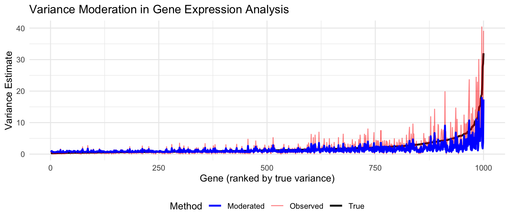
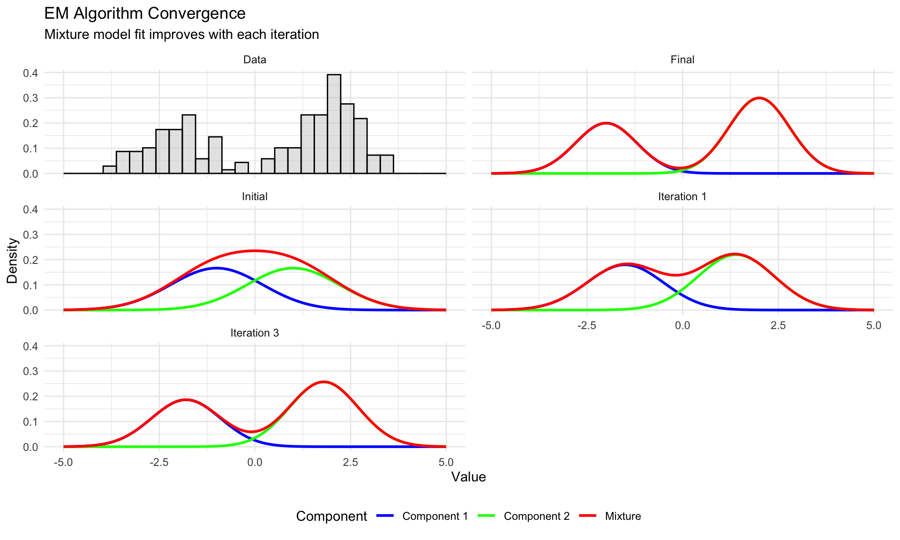
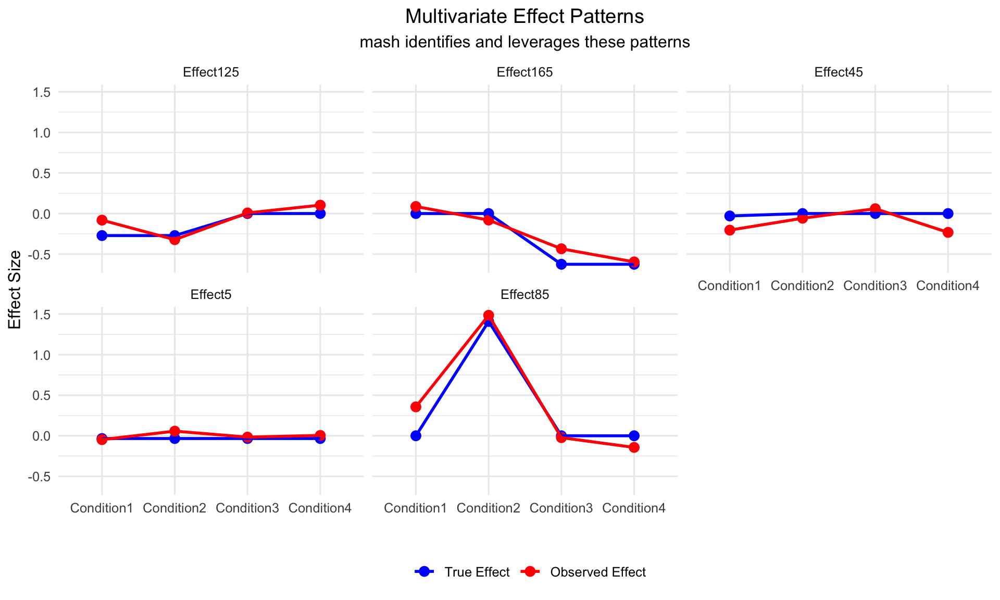

A Practical Primer on Bayesian Statistics
Sarah Urbut, MD PhD
2025-03-29
Overview
In this seminar, we’ll cover:
- Introduction to Bayesian thinking and posterior distributions
- The p-value fallacy and Bayesian alternatives
- Conjugate priors for genetic models (Beta-Binomial, Dirichlet)
- Mixture models for population structure
- Clinical trials with flat priors - lessons for genomics
- Multivariate normal mixtures (mash)
Introduction to Bayesian Thinking
Why Bayesian for Population Genomics?
Population genomics presents unique challenges:
- Multiple testing across thousands/millions of variants
- Complex patterns across populations and traits
- Prior knowledge from evolution and previous studies
- Decision-making under uncertainty
Bayesian approaches offer elegant solutions to these challenges.
Probabilistic Interpretation of Estimates
In the Bayesian framework:
- Parameters are random variables with distributions, not fixed values
- Uncertainty is represented directly through probability distributions
- All evidence is integrated coherently within a probability framework
- Natural quantification of uncertainty without hypothetical repeated sampling
- Interpretation is direct and intuitive for researchers and clinicians
Bayesian vs. Frequentist Intervals
| Bayesian Credible Interval | Frequentist Confidence Interval |
|---|---|
| “95% probability the parameter is between a and b” | “If we repeated the experiment many times, 95% of intervals constructed would contain the true parameter” |
| Directly interpretable as probability statement about the parameter | Cannot be interpreted as probability statement about the parameter |
| Incorporates prior information | No mechanism to incorporate prior information |
| Can be asymmetric, reflecting asymmetric uncertainty | Typically symmetric by construction |
| Conditioning on the observed data | Based on hypothetical repeated sampling |
Overview
In this primer, we’ll explore key Bayesian concepts critical for modern genomics:
- P-values vs. Posterior Probabilities: Why Bayesian thinking helps avoid misinterpretations
- Conjugate Models: Elegant solutions for population genetic inference
- Mixture Models: Powerful tools for complex genomic data
- Bayesian Clinical & Adaptive Designs: Learning and adapting as data accumulates
Bayes’ Theorem - The Core Idea
\[P(H|D) = \frac{P(D|H) \times P(H)}{P(D)}\]
Where:
- \(P(H|D)\) is the posterior probability - what we want to know
- \(P(D|H)\) is the likelihood - how probable the data is under our hypothesis
- \(P(H)\) is the prior probability - what we knew before
- \(P(D)\) is the evidence - a normalizing constant
Simply: Posterior ∝ Likelihood × Prior
Bayesian Updating: Visual Intuition

P-values vs. Posterior Probabilities
The Question
As scientists, we want to know:
“What is the probability that my hypothesis is true, given my data?”
But traditional p-values answer a different question:
“What is the probability of observing data this extreme or more extreme, if the null hypothesis is true?”
This mismatch causes persistent misinterpretations.
P-values vs. Bayes Factors: Definitions
P-value:
- \(P(data|H_0)\) - probability of data given null hypothesis
- Measures compatibility of data with null hypothesis
- Does not directly measure evidence for alternative
Bayes Factor:
- \(BF_{10} = \frac{P(data|H_1)}{P(data|H_0)}\) - ratio of likelihoods
- Directly compares evidence for alternative vs. null
- Tells you how much to update your beliefs
The P-value Fallacy
Scenario: Testing a SNP for disease association
Traditional approach:
- Obtain p = 0.001
- Declare “significant association”
- Publish result
The fallacy:
- p = 0.001 means “1 in 1000 chance of seeing this data if no association exists”
- NOT “999 in 1000 chance the association is real”

Key insight: With a realistic prior of 1/1000, a “significant” p-value of 0.001 only gives ~50% posterior probability of true association!
The Mathematical Connection
Under certain conditions, p-values can be converted to minimum Bayes factors:
\[BF_{min} ≈ -e \times p \times \log(p)\]
Meaning even the most favorable interpretation of a p-value provides less evidence than typically assumed:
| p-value | Minimum Bayes Factor |
|---|---|
| 0.05 | 0.37 |
| 0.01 | 0.084 |
| 0.001 | 0.0083 |
What is the Minimum Bayes Factor?
The Minimum Bayes Factor is calculated as:
\(\text{MBF} \approx -e \times p \times \log(p)\)
This formula (derived by Sellke, Bayarri, and Berger) represents the smallest possible Bayes factor that could correspond to a given p-value, regardless of the specific alternative hypothesis being tested.
Why “Minimum”?
It’s called “minimum” because:
- It assumes the most favorable conditions for the alternative hypothesis
- It represents the strongest possible evidence against the null that could be derived from a p-value
- It’s the smallest value the Bayes factor could take (stronger evidence against null = smaller Bayes factor)
Interpretation
The MBF represents the ratio of likelihoods:
\(\text{MBF} = \frac{P(\text{data}|H_0)}{P(\text{data}|H_1)}\)
For example, with p = 0.05:
MBF = 0.37
This means the data are at most 1/0.37 ≈ 2.7 times more likely under the alternative than the null
Even with the most optimistic assumptions, the evidence against the null is modest
With p = 0.001:
MBF = 0.0083
This means the data are at most 1/0.0083 ≈ 120 times more likely under the alternative
Much stronger evidence, but still not as extreme as the very small p-value might suggest
Why This Conversion Matters
This conversion from p-values to MBF is important because:
- It provides a more calibrated interpretation of statistical evidence
- It shows that conventional “statistical significance” (p < 0.05) actually represents fairly modest evidence
- It helps researchers avoid overinterpreting p-values
- It establishes a link between frequentist and Bayesian approaches
The key point is that p-values systematically overstate the evidence against the null hypothesis.
When converted to the Bayes factor scale, even a seemingly impressive p-value often translates to much more moderate evidence against the null hypothesis than most researchers would expect.
P-values vs. Bayes Factors in Genomics
The GWAS significance threshold of p < 5×10⁻⁸ corresponds to much stronger evidence than p = 0.05.
Interpreting Bayes Factors
Bayes factors have a natural interpretation:
| Bayes Factor (\(BF_{10}\)) | Evidence for H1 |
|---|---|
| 1 - 3 | Barely worth mentioning |
| 3 - 10 | Substantial |
| 10 - 30 | Strong |
| 30 - 100 | Very strong |
| > 100 | Extreme |
A \(BF_{10} = 10\) means the data are 10 times more likely under H1 than H0.
From Bayes Factor to Posterior Probability
Bayes’ theorem connects all the pieces:
\[P(H_1|data) = \frac{P(data|H_1)P(H_1)}{P(data|H_1)P(H_1) + P(data|H_0)P(H_0)}\]
This can be rewritten using the Bayes factor:
\[P(H_1|data) = \frac{BF_{10} \times P(H_1)}{BF_{10} \times P(H_1) + P(H_0)}\]
Posterior Odds Formulation
A simplified version:
\[\text{Posterior Odds} = \text{Bayes Factor} \times \text{Prior Odds}\]
Or:
\[\frac{P(H_1|data)}{P(H_0|data)} = BF_{10} \times \frac{P(H_1)}{P(H_0)}\]
This clearly shows how Bayes factors calibrate our prior beliefs.
Practical Example: GWAS
In a genome-wide association study:
- Prior probability of true association: ~1/10,000 per variant
- p-value threshold: 5×10^{-8}
- Corresponding minimum Bayes factor: ~10^{-6}
- Posterior probability: ~9%
Interpretation: Even at genome-wide significance, most “discoveries” may be false positives without additional evidence!
A useful formula
There is another way of laying out this kind of calculation, which may be slightly easier to interpret and remember, and also has the advantage of holding even when more than two models are under consideration. From Bayes theorem we have
\(\Pr(Z_i=1|x_i)=\Pr(x_i|Z_i=1)\Pr(Z_i=1)/\Pr(x_i)\).
and
\(\Pr(Z_i=0|x_i)=\Pr(x_i|Z_i=0)\Pr(Z_i=0)/\Pr(x_i)\).
Taking the ratio of these gives
\(\Pr(Z_i=1|x_i)/\Pr(Z_i=0|x_i)=[\Pr(Z_i=1)/\Pr(Z_i=0)]×[\Pr(x_i|Z_i=1)/\Pr(x_i|Z_i=0)]\).
This formula can be conveniently stated in words, using the notion of odds, as follows:
Posterior Odds = Prior Odds × LR
or, recalling that the LR is sometimes referred to as the Bayes Factor (BF), we have
Posterior Odds = Prior Odds × BF.
Note that the “Odds” of an event E1 vs an event E2 means the ratio of their probabilities. So \(\Pr(Z_i=1)/\Pr(Z_i=0)\) is the “Prior Odds”, because it is the odds prior to seeing the data \(x\). Similarly the Posterior Odds refers to the Odds of \(Z_i=1\) vs \(Z_i=0\) “posterior to” (after) seeing the data \(x\).
Benefits of Bayes Factors for Genomics
- Calibrated evidence: Direct measure of evidence strength
- Multiple testing: Naturally incorporates prior odds
- Replication: Coherent framework for combining evidence across studies
- Diverse hypotheses: Can compare non-nested models
- Positive evidence: Can support null hypothesis, not just reject it
- Study design: Allows stopping when evidence is sufficient
Key Takeaways
- P-values answer a different question than most scientists ask
- Bayes factors directly compare competing hypotheses
- Even “significant” p-values provide weaker evidence than typically assumed
- Bayes factors have a natural interpretation as evidence strength
- Converting to posterior probabilities requires considering prior odds
- In genomics, this perspective helps manage false discovery rates
The Fallacy of P-values
P-values answer a counterfactual question: “If there were no effect, how surprising would these data be?”
But researchers want to know: “What is the probability this association is real?”
This disconnect leads to systematic misinterpretation
The Multiple Testing Challenge
Modern genomics routinely tests thousands to millions of hypotheses:
- 20,000+ genes in differential expression
- Millions of variants in GWAS
- Billions of potential interactions
The consequence: Many “significant” findings are actually false positives.
The Traditional Approach
When testing m hypotheses at significance level α:
- Expected number of false positives: m × α
- With m = 1,000,000 and α = 0.05: 50,000 false positives!
Frequentist solutions:
- Bonferroni correction: α/m
- False Discovery Rate (FDR) control (Benjamini-Hochberg)
- Family-wise error rate (FWER) control
The Fundamental Issue
The p-value doesn’t tell us what we want to know:
\(\text{P-value} = P(\text{data}|\text{null})\)
What we want is:
\(P(\text{null}|\text{data})\)
To bridge this gap, we need Bayes’ theorem.
The Bayesian Formulation
We model each test as:
- \(H_0\): No effect (null hypothesis)
- \(H_1\): Real effect (alternative hypothesis)
- Prior probability: \(P(H_1) = \pi_1\)
- Likelihood ratio: \(BF = \frac{P(\text{data}|H_1)}{P(\text{data}|H_0)}\)
The posterior probability of a true finding:
\[P(H_1|\text{data}) = \frac{BF \times \pi_1}{BF \times \pi_1 + (1-\pi_1)}\]
Visualizing Multiple Hypothesis Testing
The challenge: Separating true signals (blue) from noise (gray) when true effects are rare.
Local False Discovery Rate (LFDR)
The LFDR for a test with statistic z is:
\[\text{LFDR}(z) = P(H_0|z) = 1 - P(H_1|z)\]
This is a direct Bayesian statement about the probability of false discovery for each individual test.
Benefits:
- Test-specific measure of evidence
- Directly interpretable probability
- Accounts for prior probability of effects
Empirical Bayes for Multiple Testing
We can estimate components from the data:
- Proportion of true effects: \(\hat{\pi}_1\)
- Distribution of null statistics: \(\hat{f}_0(z)\)
- Distribution of all statistics: \(\hat{f}(z)\)
Then:
\[\widehat{\text{LFDR}}(z) = \frac{(1-\hat{\pi}_1)\hat{f}_0(z)}{\hat{f}(z)}\]
Popular implementations: qvalue package, fdrtool, locfdr
Comparison with FDR Control
Frequentist FDR (Benjamini-Hochberg):
- Controls expected proportion of false discoveries
- Same threshold for all tests based on ranked p-values
- No direct probability interpretation for individual tests
Bayesian approach:
- Calculates probability of false discovery for each test
- Can incorporate prior information on effect prevalence
- Naturally addresses multiple testing without penalties
Example: Genomic Applications
Posterior probabilities provide a direct measure of evidence for each test.
Decision Boundaries Comparison
Both approaches control false discoveries but with different decision boundaries.
Advantages of Bayesian Multiple Testing
- Direct probabilistic statements: “95% probability of true effect”
- Incorporates effect prevalence: Accounts for rarity of true effects
- No arbitrary thresholds: Posterior probabilities are on probability scale
- Effect size integration: Naturally considers both significance and magnitude
- Prior information: Can incorporate domain knowledge
- Decision theory integration: Allows optimal decision-making based on costs
Extensions
Advanced Bayesian approaches for multiple testing:
- Hierarchical models: Sharing information across tests
- Correlated tests: Modeling dependency structures between tests
- Spatial/network priors: Incorporating biological relationships
- Mixture priors: More flexible alternative distributions
- Adaptive shrinkage: Data-driven prior specification
- Full Bayesian decision: Incorporating asymmetric costs of errors
Key Takeaways
- Multiple testing is a core challenge in genomics
- Bayesian approaches directly address the quantity of interest
- Local FDR provides test-specific false discovery probabilities
- Empirical Bayes methods estimate key components from data
- Posterior probabilities are directly interpretable
- The approach extends naturally to complex data structures
Hierarchical Bayesian Models: The Problem of Many Groups
In genomics, we often need to estimate many related parameters:
- Effects of thousands of variants
- Expression levels across multiple tissues
- Population-specific allele frequencies
- Gene-specific parameters
Independent analysis: Ignores similarities between groups
Complete pooling: Ignores differences between groups
Hierarchical models provide the best of both worlds.
The Power of Partial Pooling

Hierarchical models adaptively share information across groups: stronger shrinkage for uncertain estimates, less for confident ones.
Mathematical Structure
A typical two-level hierarchical model:
\[ \begin{align} \text{Data level: } & y_j \sim N(\theta_j, \sigma_j^2) \\ \text{Group level: } & \theta_j \sim N(\mu, \tau^2) \\ \text{Hyperprior level: } & \mu \sim N(\mu_0, \sigma_0^2) \\ & \tau^2 \sim \text{InvGamma}(a, b) \end{align} \]
Where:
- \(y_j\) is the observed data in group \(j\)
- \(\theta_j\) is the group-specific parameter
- \(\mu\) and \(\tau^2\) are shared across groups
- Hyperpriors allow learning the amount of sharing
The Beauty of Shrinkage
The posterior mean for group \(j\) is:
\[\hat{\theta}_j = \frac{\frac{1}{\sigma_j^2}y_j + \frac{1}{\tau^2}\mu}{\frac{1}{\sigma_j^2} + \frac{1}{\tau^2}} = w_j y_j + (1-w_j)\mu\]
Where \(w_j = \frac{\frac{1}{\sigma_j^2}}{\frac{1}{\sigma_j^2} + \frac{1}{\tau^2}}\) is the weight given to the group’s data.
Key insights:
- Uncertain estimates (\(\sigma_j^2\) large) are shrunk more toward \(\mu\)
- Heterogeneous groups (\(\tau^2\) large) experience less shrinkage
- The amount of sharing is learned from the data itself
Applications in Genomics
Hierarchical models are ubiquitous in genomics:
- eQTL Analysis: Sharing information across tissues
- Allele Frequencies: Borrowing strength across populations
- GWAS Meta-analysis: Combining studies while accounting for heterogeneity
- Differential Expression: Moderation of gene-specific variance estimates
- Fine Mapping: Sharing information across correlated variants
Multivariate Extension: correlated effects
For effects across multiple tissues or conditions:
\[ \begin{align} \text{Data level: } & \mathbf{y}_j \sim N(\boldsymbol{\theta}_j, \mathbf{S}_j) \\ \text{Group level: } & \boldsymbol{\theta}_j \sim N(\boldsymbol{\mu}, \boldsymbol{\Sigma}) \\ \end{align} \]
Now \(\boldsymbol{\Sigma}\) captures correlations between conditions.
Examples: multivariate adaptive shrinkage (mash), multi-tissue eQTL analysis
Nonparametric Extensions
We can make hierarchical models more flexible:
Mixture of normals for the prior:
\[\theta_j \sim \sum_{k=1}^K \pi_k N(\mu_k, \tau_k^2)\]Dirichlet process priors for unknown grouping:
\[\theta_j \sim DP(\alpha, G_0)\]
These extensions allow for:
- Multi-modal effect distributions
- Automatic clustering of similar effects
- Robust estimation with outliers
Example: Moderated t-statistics
Limma’s moderated t-statistics for gene expression:
- Standard approach: Estimate variance for each gene independently
- Hierarchical approach: Model gene variances as coming from inverse-gamma prior
- Result: “Borrow information” across genes to improve variance estimates
Computational Approaches
Hierarchical models can be fit using:
- Empirical Bayes: Estimate hyperparameters from data, then obtain group-specific posteriors
- Fast and scalable
- Used in tools like limma, edgeR, DESeq2
- Fast and scalable
- Full Bayes: Sample from full posterior using MCMC
- Complete uncertainty quantification
- Handles complex dependency structures
- More computationally intensive
- Complete uncertainty quantification
Practical Advantages
- Improved accuracy: Lower mean squared error than independent estimates
- Uncertainty quantification: Full posterior distributions
- Efficiency: Makes better use of limited sample sizes
- Robustness: Less sensitive to outliers and high-noise groups
- Discovery power: Increases ability to detect real effects
- Interpretability: Reveals relationships between groups
Key Takeaways
- Hierarchical models provide a principled approach to sharing information
- Automatically balance between pooled and unpooled estimates
- Particularly valuable for “small n, large p” settings common in genomics
- Allow modeling of data-generating processes at multiple levels
- Extend naturally to complex, multivariate settings
- Provide computational flexibility from empirical to fully Bayesian approaches
Conjugate Priors for Genetic Models
Conjugate Priors: Why They’re Beautiful
Definition: A prior is conjugate when the posterior has the same distribution family
Why they matter:
1. Analytical solutions – no MCMC needed
2. Interpretable parameters – prior as “pseudo-observations”
3. Sequential updating – yesterday’s posterior is today’s prior
4. Computational efficiency – critical for large genomic datasets
figures

::::
Beta-Binomial: Perfect for Allele Frequencies
Model:
- Prior: \(\theta \sim \text{Beta}(\alpha, \beta)\)
- Likelihood: \(X|\theta \sim \text{Binomial}(n, \theta)\)
- Posterior: \(\theta|X \sim \text{Beta}(\alpha + X, \beta + n - X)\)
Applications:
- Allele frequency estimation
- Case-control association
- Heterozygosity estimation
- Sequencing error rates

Dirichlet-Multinomial: For Multiple Alleles
Model:
- Prior: \(\vec{\theta} \sim \text{Dirichlet}(\vec{\alpha})\)
- Likelihood: \(\vec{X}|\vec{\theta} \sim \text{Multinomial}(n, \vec{\theta})\)
- Posterior: \(\vec{\theta}|\vec{X} \sim \text{Dirichlet}(\vec{\alpha} + \vec{X})\)
Applications:
- Multiple allele frequencies
- Haplotype frequencies
- Population admixture proportions
- Taxonomic abundances

::::
Conjugate Normal-Normal Model
- One of the most elegant and widely-used conjugate pairs in Bayesian statistics
- Perfect for analyzing quantitative traits in genomics
- Gives us a mathematical shortcut for updating beliefs
The Setup
When analyzing a continuous parameter \(\mu\) (like an effect size):
- Prior: \(\mu \sim \mathcal{N}(\mu_0, \sigma_0^2)\)
- Likelihood: \(X \sim \mathcal{N}(\mu, \sigma^2)\) where \(\sigma^2\) is known
- Question: What is \(p(\mu|X)\)?
The Mathematical Magic
The elegance is in the algebraic symmetry:
\[ \begin{align} p(\mu|X) &\propto p(X|\mu) \times p(\mu)\\ &\propto \exp\left(-\frac{(X-\mu)^2}{2\sigma^2}\right) \times \exp\left(-\frac{(\mu-\mu_0)^2}{2\sigma_0^2}\right) \end{align} \]
Notice the beautiful symmetry: \((X-\mu)^2\) in the likelihood and \((\mu-\mu_0)^2\) in the prior.
The Key Insight
When we expand these terms:
\[ \begin{align} p(\mu|X) &\propto \exp\left(-\frac{1}{2}\left[\frac{(X-\mu)^2}{\sigma^2} + \frac{(\mu-\mu_0)^2}{\sigma_0^2}\right]\right)\\ &\propto \exp\left(-\frac{1}{2}\left[\frac{\mu^2 - 2\mu X + X^2}{\sigma^2} + \frac{\mu^2 - 2\mu\mu_0 + \mu_0^2}{\sigma_0^2}\right]\right) \end{align} \]
Collecting terms with \(\mu^2\) and \(\mu\)…
The Posterior Formula
After completing the square, we get:
\[\mu|X \sim \mathcal{N}(\mu_n, \sigma_n^2)\]
Where:
\[\mu_n = \frac{\frac{\mu_0}{\sigma_0^2} + \frac{X}{\sigma^2}}{\frac{1}{\sigma_0^2} + \frac{1}{\sigma^2}} = \frac{\sigma^2\mu_0 + \sigma_0^2 X}{\sigma^2 + \sigma_0^2}\]
\[\frac{1}{\sigma_n^2} = \frac{1}{\sigma_0^2} + \frac{1}{\sigma^2}\]
A More Intuitive View
The posterior mean is a precision-weighted average of the prior mean and the data:
\[\mu_n = w\mu_0 + (1-w)X\]
Where \(w = \frac{\sigma^2}{\sigma^2 + \sigma_0^2} = \frac{\text{data precision}}{\text{total precision}}\)
- When data is precise (small \(\sigma^2\)): we trust the data more
- When prior is precise (small \(\sigma_0^2\)): we trust the prior more
Multiple Observations
With multiple observations \(X_1,...,X_n\), we get:
\[\mu|(X_1,...,X_n) \sim \mathcal{N}\left(\frac{\frac{\mu_0}{\sigma_0^2} + \frac{n\bar{X}}{\sigma^2}}{\frac{1}{\sigma_0^2} + \frac{n}{\sigma^2}}, \left(\frac{1}{\sigma_0^2} + \frac{n}{\sigma^2}\right)^{-1}\right)\]
- The sample mean \(\bar{X}\) is a sufficient statistic
- More data increases precision linearly
Genomics Application: eQTL Effect Sizes
In genomics, we might use this model for:
- Prior: Historical effect sizes for similar variants
- Likelihood: Observed effect in current study
- Posterior: Updated estimate that balances prior knowledge and new data
Example: Effect sizes for expression quantitative trait loci (eQTLs)
The Power of Conjugate Priors
Advantages of conjugate Normal-Normal:
- Analytical solutions – no MCMC required
- Computational efficiency – critical for genomic scale
- Interpretable updates – precision-weighted averages
- Sequential processing – can update one observation at a time
Normal-Normal: Key Takeaways
- The posterior is also Normal – that’s conjugacy!
- The posterior mean is a weighted average of prior mean and data
- Weights are determined by relative precisions (1/variance)
- The posterior precision is the sum of the prior and data precisions
- This model provides the foundation for many advanced Bayesian genomic methods
Extension: Empirical Bayes for Normal Means
- When we don’t have a specific prior, we can estimate it from the data
- This approach, known as Empirical Bayes, is extremely powerful for genomics
- Applications include: multiple testing, sparse signal detection, and effect size estimation
Methods Using Normal-Normal Conjugacy
- Adaptive Shrinkage (ash): Uses a mixture of normals as the prior
- Multivariate Adaptive Shrinkage (mash): Extends to correlated effects across conditions
- False Discovery Rate Control: Through local false discovery rates
- Hierarchical Models: Building multi-level models with partially pooled estimates
Mixture Models for Complex Data: What Are Mixture Models?
Mixture models are probabilistic models that represent the presence of subpopulations within an overall population:
- Used when data come from multiple underlying processes
- Represent heterogeneous populations as mixtures of simpler distributions
- Allow clustering without hard assignments
- Incorporate uncertainty in group membership
Mixture Model: Mathematical Formulation
A mixture model combines multiple distributions to model complex data:
\[p(x) = \sum_{k=1}^K \pi_k f_k(x|\theta_k)\]
Where:
- \(p(x)\) is the overall probability density
- \(K\) is the number of components (subpopulations)
- \(\pi_k\) are the mixing weights (\(\sum_{k=1}^K \pi_k = 1\))
- \(f_k(x|\theta_k)\) are the component densities with parameters \(\theta_k\)
A Closer Look at the Components
Key components:
- Component distributions \(f_k(x|\theta_k)\)
- Each represents a subpopulation
- Can be any distribution family
- Common choices: Gaussian, multinomial, beta
- Each represents a subpopulation
- Mixing weights \(\pi_k\)
- Proportion of data from each component
- Must sum to 1: \(\sum_{k=1}^K \pi_k = 1\)
- Reflect prior probabilities of group membership
- Proportion of data from each component
- Latent variables \(z_i\)
- Unobserved component membership
- \(z_i = k\) means data point \(i\) came from component \(k\)
- Unobserved component membership
Likelihood Function for Mixture Models
The likelihood of a mixture model for \(n\) independent observations \(x_1, \ldots, x_n\) is:
\[L(\theta, \pi | x_1, \ldots, x_n) = \prod_{i=1}^n p(x_i) = \prod_{i=1}^n \sum_{k=1}^K \pi_k f_k(x_i|\theta_k)\]
Challenge: The sum inside the product makes this difficult to optimize directly
Solution: Introduce latent variables \(z_i\) and use the EM algorithm
The EM Algorithm in Detail
The Expectation-Maximization (EM) algorithm is an iterative method for finding maximum likelihood estimates:
E-step: Calculate “responsibilities” – the posterior probability that data point \(i\) belongs to component \(k\):
\[\gamma_{ik} = P(z_i = k | x_i, \theta) = \frac{\pi_k f_k(x_i|\theta_k)}{\sum_{j=1}^K \pi_j f_j(x_i|\theta_j)}\]
M-step: Update parameters using weighted maximum likelihood:
\[\pi_k^{new} = \frac{1}{n}\sum_{i=1}^n \gamma_{ik}\]
\[\theta_k^{new} = \arg\max_{\theta_k} \sum_{i=1}^n \gamma_{ik} \log f_k(x_i|\theta_k)\]
EM Algorithm: Step-by-Step Example
Worked Example: EM Algorithm Step-by-Step
Let’s walk through each step of the EM algorithm for a mixture of two Gaussians:
- Initialize parameters:
- Set initial mixing weights: \(\pi_1 = \pi_2 = 0.5\)
- Set initial component means: \(\mu_1 = -1, \mu_2 = 1\)
- Set initial component standard deviations: \(\sigma_1 = \sigma_2 = 1\)
- Set initial mixing weights: \(\pi_1 = \pi_2 = 0.5\)
- E-step: For each data point \(x_i\), calculate the responsibility of each component:
- \(\gamma_{i1} = \frac{\pi_1 N(x_i|\mu_1,\sigma_1^2)}{\pi_1 N(x_i|\mu_1,\sigma_1^2) + \pi_2 N(x_i|\mu_2,\sigma_2^2)}\)
- \(\gamma_{i2} = 1 - \gamma_{i1}\)
- \(\gamma_{i1} = \frac{\pi_1 N(x_i|\mu_1,\sigma_1^2)}{\pi_1 N(x_i|\mu_1,\sigma_1^2) + \pi_2 N(x_i|\mu_2,\sigma_2^2)}\)
- M-step: Update the parameters using the responsibilities:
- \(\pi_1^{new} = \frac{1}{n}\sum_{i=1}^n \gamma_{i1}\) (similarly for \(\pi_2^{new}\))
- \(\mu_1^{new} = \frac{\sum_{i=1}^n \gamma_{i1}x_i}{\sum_{i=1}^n \gamma_{i1}}\) (similarly for \(\mu_2^{new}\))
- \((\sigma_1^{new})^2 = \frac{\sum_{i=1}^n \gamma_{i1}(x_i-\mu_1^{new})^2}{\sum_{i=1}^n \gamma_{i1}}\) (similarly for \(\sigma_2^{new}\))
- \(\pi_1^{new} = \frac{1}{n}\sum_{i=1}^n \gamma_{i1}\) (similarly for \(\pi_2^{new}\))
- Repeat until convergence (parameters stop changing significantly)
The EM Algorithm: Mathematical Intuition
Key insight: We’re solving a chicken-and-egg problem
If we knew component assignments, parameter estimation would be easy
If we knew parameters, component assignments would be easy
EM iteratively solves both by using expected assignments
E-step (Expectation): Calculate expected component memberships
\[\gamma_{ik} = P(z_i = k | x_i, \theta^{(t)}) = \frac{\pi_k^{(t)} f_k(x_i|\theta_k^{(t)})}{\sum_{j=1}^K \pi_j^{(t)} f_j(x_i|\theta_j^{(t)})}\]
Intuition: “How likely is individual i to belong to population k, given our current parameter estimates?”
M-step (Maximization): Update parameters using weighted averages
For mixing weights:
\[\pi_k^{(t+1)} = \frac{1}{n}\sum_{i=1}^n \gamma_{ik}\]
Intuition: “The new population frequency is the average membership across all individuals”
For component means (Gaussian case):
\[\mu_k^{(t+1)} = \frac{\sum_{i=1}^n \gamma_{ik}x_i}{\sum_{i=1}^n \gamma_{ik}}\]
Intuition: “The new population mean is a weighted average where individuals are weighted by their probability of belonging to this population”
Bayesian Mixture Models
Bayesian mixture models add priors to the parameters:
\(p(\theta, \pi | x_1, \ldots, x_n) \propto p(x_1, \ldots, x_n | \theta, \pi) \times p(\theta, \pi)\)
Common prior choices:
- \(\pi \sim \text{Dirichlet}(\alpha_1, \ldots, \alpha_K)\) for mixing weights
- Component-specific priors for \(\theta_k\) (e.g., Normal-Inverse-Gamma for Gaussian components)
Advantages:
- Handle uncertainty in the number of components (K)
- Avoid singularities and improve stability
- Allow for informed priors from previous studies
- Provide full posterior distribution rather than point estimates (in full MCMC implementation, but SLOW)
Mixture Model Applications in Genomics
1. Population Structure
- Components = ancestral populations
- Individual genotypes = admixtures of populations
- Example: STRUCTURE, ADMIXTURE software
- Used for: demographic history, association studies, conservation
2. Genetic effect estimation
- (e.g., adaptive shrinkage methods like ash/mash for multiple conditions)
3. Gene Expression Clustering
- Components = cell types/states
- Expression patterns = signatures of cell types
- Example: Single-cell RNA-seq clustering
- Used for: cell type identification, developmental trajectories

The STRUCTURE Model in Detail
STRUCTURE: A Bayesian mixture model for population genetics
Key components:
- Each individual = mixture of \(K\) ancestral populations
- Each population = distinct allele frequencies
- Goal: Infer ancestry proportions & population frequencies
Bayesian formulation:
- Prior: \(q_{ik} \sim \text{Dirichlet}(\alpha)\) (ancestry proportions)
- Prior: \(f_{kj} \sim \text{Beta}(\lambda)\) (allele frequencies)
- Likelihood: \(P(X_{ij} | q_i, f_j)\) (genotype probabilities)
Effect Size Mixtures in GWAS
Problem: Most variants have no effect, but some do
Solutions:
- Spike-and-slab prior: Mixture of point mass at zero and continuous distribution
- Scale mixture: Mixture of normal distributions with different variances
- Bayesian variable selection: Latent indicator for whether variant is causal
Benefits:
- Controls false discovery rate
- Improves power to detect true associations
- Provides interpretable posterior probabilities
- Naturally handles multiple testing
(Illustration of spike-and-slab concept could go here in text form)
Multivariate Normal Mixtures: The mash Approach
Key idea: Share information across related conditions
Mathematical model:
- \(\hat{\beta}_j \sim N(\beta_j, S_j)\) (observed effects)
- \(\beta_j \sim \sum_{k=1}^K \pi_k N(0, U_k)\) (true effects)
Covariance matrices \(U_k\) capture patterns:
- Shared effects across all conditions
- Condition-specific effects
- Structured correlation patterns
- Data-driven patterns
Benefits:
- Improves effect estimation through sharing
- Discovers patterns of effect heterogeneity
- Controls false discovery rate
- Provides interpretable multivariate posteriors

::::
Common Challenges with Mixture Models
- Identifiability issues: Component labels can be permuted (label switching)
- Local optima: EM algorithm may converge to suboptimal solutions
- Initialization sensitivity: Results depend on starting values
- Singularities: Component variance can collapse to zero
- Determining number of components: No single best method
Solutions:
- Run algorithm multiple times with different initializations
- Regularization via priors (Bayesian approach)
- Deterministic annealing or other modified EM variants
- Model averaging across different K values
- Cross-validation for model selection
Bayesian Clinical Trials: The Mathematical Foundation
The core idea of Bayesian clinical trials is to use probability distributions to quantify uncertainty about parameters:
Traditional (frequentist) approach:
- Fixed design with predetermined sample size
- Binary decision making (significant or not)
- No formal incorporation of prior information
Bayesian approach offers several advantages:
- Sequential analysis: Update posterior as data accumulates
- Adaptive design: Sample size, treatment allocation can change mid-trial
- Probabilistic conclusions: Direct statements about treatment effects
- Prior incorporation: Previous trial results, biological knowledge
The mathematical framework:
- Prior distribution: \(p(\theta)\) – Initial beliefs about parameter \(\theta\)
- Likelihood: \(p(X|\theta)\) – Probability of data given parameter
- Posterior distribution: \(p(\theta|X) \propto p(X|\theta)p(\theta)\) – Updated beliefs
Bayesian Model Averaging
The Model Selection Problem
Traditional approach:
1. Define candidate models
2. Select “best” model using AIC, BIC, etc.
3. Make inference based on single chosen model
The problem: Ignores model uncertainty!
- What if multiple models fit equally well?
- What if different models make different predictions?
- What if the “best” model changes with small data changes?
Bayesian Model Averaging
Rather than choosing a single model, we can average over all models:
- Assign prior probabilities to models: \(P(M_k)\)
- Compute posterior model probabilities: \(P(M_k|data)\)
- Weight predictions by these probabilities
\[P(\theta|data) = \sum_{k=1}^K P(\theta|M_k, data) \times P(M_k|data)\]
This accounts for uncertainty in both parameters AND model selection.
The Mathematical Framework
For K candidate models \(M_1, M_2, \ldots, M_K\):
Prior model probabilities: \(P(M_k)\)
Posterior model probabilities:
\[P(M_k|data) = \frac{P(data|M_k)P(M_k)}{\sum_{j=1}^K P(data|M_j)P(M_j)}\]Marginal likelihood of model \(M_k\):
\[P(data|M_k) = \int P(data|\theta_k, M_k)P(\theta_k|M_k)d\theta_k\]
Visualizing BMA
BMA combines predictions from multiple models, weighted by their posterior probabilities, leading to more robust inference.
BMA for Fine-Mapping
In genetic fine-mapping, we don’t know which variants are causal:
- Many possible causal configurations (models)
- BMA provides a coherent approach to handle this uncertainty

Posterior Inclusion Probabilities (PIPs) from BMA provide a robust way to prioritize likely causal variants.
Model Averaging in Genomics
Common applications:
- Gene-Environment Interactions: Uncertainty in interaction model forms
- Gene-Based Association Tests: Multiple ways to combine variants
- Fine-Mapping: Uncertainty in causal variant configurations
- Gene Set Analysis: Uncertainty in pathway definitions
- eQTL Mapping: Uncertainty in the appropriate expression model
- Polygenic Risk Scores: Uncertainty in variant selection
BMA vs. Model Selection

Model averaging often outperforms selection of a single “best” model, especially for prediction.
Computational Approaches
- Exact BMA: Enumerate all models (feasible for small model spaces)
- Markov Chain Monte Carlo Model Composition (MC³):
- Sample models according to their posterior probabilities
- Efficient exploration of large model spaces
- Sample models according to their posterior probabilities
- Approximations:
- BIC approximation to marginal likelihoods
- Laplace approximation for integration
- Variational methods for high-dimensional spaces
- BIC approximation to marginal likelihoods
Practical Considerations
- Prior model probabilities:
- Equal priors for all models?
- Complexity penalties?
- Biologically informed priors?
- Equal priors for all models?
- Model space definition:
- Which models to include?
- How to handle model correlation?
- Which models to include?
- Inference targets:
- Parameter estimates vs. predictions
- Variable importance measures
- Model-averaged confidence intervals
- Parameter estimates vs. predictions
Key Advantages
- Honest uncertainty quantification: Accounts for model uncertainty
- Improved prediction accuracy: Particularly for out-of-sample prediction
- Robust inference: Less sensitive to model misspecification
- Variable importance measures: Posterior inclusion probabilities
- Decision-theoretic optimality: Under certain loss functions
- Natural Occam’s razor: Automatically balances fit and complexity
Key Takeaways
- Model selection ignores uncertainty in the model itself
- Bayesian model averaging provides a principled framework for incorporating model uncertainty
- Posterior model probabilities balance fit and complexity
- BMA often produces more robust parameter estimates and predictions
- Computational methods exist for handling large model spaces
- In genomics, BMA is particularly valuable for fine-mapping and complex trait analysis
Bayesian Clinical Trials: Direct Probability Statements
Key insight: Even with flat priors, Bayesian methods give you direct probability statements about parameters
Example: For a treatment effect θ with flat prior and normal likelihood:
\(p(\theta|data) \propto \text{Normal}(\hat{\theta}, SE^2)\)
Direct probability statements:
\(P(\theta > 0 | data) = 0.97\) → “97% probability the treatment is beneficial”
\(P(\theta > 0.2 | data) = 0.63\) → “63% probability the effect exceeds clinically meaningful threshold”
\(P(0.1 < \theta < 0.3 | data) = 0.75\) → “75% probability effect is in the moderate range”
Contrast with frequentist:
“p < 0.05” → Reject null hypothesis
“95% CI: [0.1, 0.4]” → In repeated sampling, 95% of intervals would contain true value
Decision rules can be based on:
- Posterior probability: \(P(\theta > \delta|X) > \gamma\)
- Predictive probability of success
- Expected utility/loss considerations
Bayesian Meta-Analysis: The Mathematical Framework
Problem: Combine evidence across heterogeneous studies
Model formulation:
- Let \(y_i\) be the observed effect in study \(i\)
- Let \(\sigma_i^2\) be the variance (often known from standard error)
- Let \(\theta_i\) be the true effect in study \(i\)
Hierarchical model:
\(y_i | \theta_i, \sigma_i^2 \sim N(\theta_i, \sigma_i^2)\)
\(\theta_i | \mu, \tau^2 \sim N(\mu, \tau^2)\)
\(\mu \sim N(\mu_0, \sigma_0^2)\)
\(\tau^2 \sim \text{InvGamma}(a, b)\)
Where:
- \(\mu\) is the overall mean effect
- \(\tau^2\) is the between-study heterogeneity
- \(\mu_0, \sigma_0^2, a, b\) are hyperparameters
Key advantages:
- Naturally accounts for heterogeneity
- Uncertainty in all parameters
- Shrinkage of extreme estimates toward the mean
- Robust to outliers with appropriate priors
Bayesian Meta-Analysis: Visualization
Traditional approaches:
- Fixed effects (assumes same effect size)
- Random effects (allows variation in effect size)
- Often sensitive to outliers
Bayesian advantages:
- Full posterior distribution for all parameters
- Can incorporate informative priors
- Naturally handles small studies (shrinkage)
- Can model outliers explicitly
- Direct probability statements about effects
Example interpretation:
- Posterior probability of benefit = 98%
- 95% credible interval for effect size: [0.1, 0.5]
- 90% probability heterogeneity is moderate to high
Bayesian Adaptive Trial Designs
A powerful framework that allows studies to evolve based on accumulating evidence
- Combines statistical efficiency with ethical considerations
- Particularly powerful for precision medicine approaches
- Provides direct probability statements about treatment effects
- Extends naturally to genetic and genomic applications
Key Idea: Learning While Doing
Traditional (frequentist) trials:
- Fixed design determined at the outset
- Sample size calculations based on frequentist power
- Analysis only after all data collection is complete
Bayesian adaptive trials:
- Update knowledge continuously as data accumulates
- Modify aspects of the trial in response to emerging data
- Make probability-based decisions at interim points
The Bayesian Framework
For a treatment effect \(\theta\):
- Prior distribution: \(p(\theta)\) – initial beliefs about the effect
- Likelihood: \(p(data|\theta)\) – probability of observing the data
- Posterior distribution: \(p(\theta|data) \propto p(data|\theta)p(\theta)\)
As data accumulates, the posterior provides a complete picture of current knowledge.
What Can Be Adapted?
- Sample size – stop early for efficacy, futility, or continue for more precision
- Treatment allocation – assign more patients to promising treatments
- Eligibility criteria – focus on responsive subgroups
- Dosing – concentrate on optimal doses
- Endpoints – prioritize more informative outcomes
All based on predefined decision rules using posterior probabilities.
Example: Adaptive Stopping Rules
A trial may stop early if:
- \(P(\theta > 0 | data) > 0.99\) (efficacy – treatment works)
- \(P(\theta < \delta | data) > 0.95\) (futility – treatment doesn’t meet threshold)
- \(P(\delta_1 < \theta < \delta_2 | data) > 0.90\) (precision – effect is known with sufficient certainty)
These are direct probability statements about the parameter of interest.
Example: Adaptive Randomization
As evidence accumulates, allocation probabilities shift:
- Initial: Equal probability to all treatment arms
- Adaptive: Higher probability to treatments with better outcomes
\[P(\text{assign to treatment } j) \propto P(\text{treatment } j \text{ is best}|\text{current data})\]
Balances learning (exploration) with treating patients optimally (exploitation). ## Visualizing Adaptive Trials
Early stopping means fewer patients needed and faster results.
Adaptive Enrichment: Genetics Applications
For trials involving genetic subgroups:
- Start with broad eligibility
- As data accumulates, identify responsive genetic profiles
- Adapt enrollment to focus on promising subgroups
- Potentially obtain approval for genetically defined population
Direct extension of precision medicine principles.
Platform Trials: Multiple Treatments
Modern adaptive platform trials can:
- Test multiple treatments simultaneously
- Add new treatment arms as they become available
- Remove ineffective treatments early
- Share control groups across treatments
Examples: I-SPY2 (breast cancer), GBM AGILE (glioblastoma), RECOVERY (COVID-19)
Benefits of Bayesian Adaptive Designs
- Ethical advantages – fewer patients on ineffective treatments
- Efficiency – often require fewer total patients
- Flexibility – can adapt to unexpected findings
- Subgroup identification – find responsive populations
- Interpretability – direct probability statements
- Speed – potential for earlier conclusions
Challenges to Consider
- Operational complexity – requires robust infrastructure
- Statistical expertise – more sophisticated than traditional designs
- Regulatory considerations – though acceptance is growing
- Prior specification – sensitivity analyses important
- Simulation required – operating characteristics must be understood
From Clinical Trials to Genomics
The same principles apply to genomics research:
- Adaptive sampling in sequencing studies
- Sequential testing with genomic data
- Multi-stage designs for genetic discovery
- Early stopping for genomic biomarker validation
- Subgroup enrichment based on genetic profiles
Key Takeaways
- Bayesian adaptive designs provide a formal framework for learning while doing
- Direct probability statements make interpretation straightforward
- Adapting aspects of the study can improve efficiency and ethics
- The approach is particularly valuable for precision medicine
- Methods extend naturally to genomics applications
The SuSiE Model for Fine-Mapping: Mathematical Framework
Problem: Identify causal variants from correlated SNPs in GWAS loci
SuSiE (Sum of Single Effects) model:
\(\mathbf{y} = \sum_{l=1}^L \mathbf{X} \boldsymbol{\beta}_l + \boldsymbol{\epsilon}\)
Where:
- \(\mathbf{y}\) is the vector of phenotype values (\(n\) individuals)
- \(\mathbf{X}\) is the genotype matrix (\(n\) individuals × \(p\) SNPs)
- \(L\) is the number of causal effects (typically small, e.g., 1-10)
- Each \(\boldsymbol{\beta}_l\) has exactly one non-zero element (single-effect)
- \(\boldsymbol{\epsilon} \sim N(\mathbf{0}, \sigma^2\mathbf{I})\) is the error term
Bayesian formulation:
- Each \(\boldsymbol{\beta}_l\) follows a “spike-and-slab” prior:
- For each effect \(l\), exactly one SNP \(j\) is causal
- Prior probability SNP \(j\) is causal: \(\pi_j\) (can be uniform or informed)
- Effect size distribution: \(\beta_{lj} \sim N(0, \sigma^2_l)\) if causal, 0 otherwise
Key outputs:
- Posterior Inclusion Probability (PIP) for each SNP
- 95% credible sets for each effect
- Posterior distributions of effect sizes
SuSiE Fine-Mapping: Visualization
Problem: Identify causal variants in a GWAS locus
Traditional approach:
- Select all SNPs with p < threshold
- Often includes many correlated SNPs
- No clear separation of multiple signals
SuSiE advantages:
- Accounts for correlation structure (LD)
- Separates overlapping signals
- Provides probabilistic quantification
- Can incorporate functional priors
- Defines credible sets with clear interpretation
Example interpretation:
- 95% credible set contains 3 SNPs
- Lead SNP has 80% probability of being causal
- Probability of at least one causal SNP in the region: 99%
Practical Recommendations for Bayesian Genomics
- Start with informative priors when possible
- Use previous studies
- Incorporate functional annotations
- Consider evolutionary constraints
- Use previous studies
- Report posterior probabilities, not just p-values
- \(P(\text{association} | \text{data})\) is more interpretable than \(P(\text{data} | \text{no association})\)
- Provides direct probability statements about hypotheses
- \(P(\text{association} | \text{data})\) is more interpretable than \(P(\text{data} | \text{no association})\)
- Use conjugate models for computational efficiency
- Beta-Binomial for allele frequencies
- Dirichlet-Multinomial for haplotype frequencies
- Normal-Normal for quantitative traits
- Beta-Binomial for allele frequencies
- Consider mixture models for complex data
- Population structure
- Heterogeneous effect sizes
- Multiple causal variants
- Population structure
- Apply decision theory for optimal designs
- Balance false positives and false negatives
- Consider costs of follow-up studies
- Optimize sample allocation
- Balance false positives and false negatives
Summary: When to Use Bayesian Methods
| Problem | Bayesian Approach | Advantage |
|---|---|---|
| Multiple testing | Posterior probabilities | Direct interpretation, no arbitrary thresholds |
| Sparse effects | Mixture priors | Better power, natural sparsity |
| Heterogeneous effects | Hierarchical models | Borrows strength across contexts |
| Sequential data | Adaptive designs | Efficiency, early stopping |
| Prior knowledge integration | Informative priors | Improved accuracy, reduced sample size |
| Complex dependencies | Bayesian networks | Causal inference, missing data handling |
Resources for Bayesian Genomics
Software:
- R packages: rstan, brms, mashr, BGLR, INLA
- Python: PyMC3, Stan, Edward
- Specialized: STRUCTURE, ADMIXTURE, SNPTEST
Books:
- “Bayesian Data Analysis” by Gelman et al.
- “Statistical Rethinking” by McElreath
- “Bayesian Methods for Data Analysis” by Carlin & Louis
Online Resources:
- StatisticalGenetics.info
- Stan User Guide
- Bayesian Methods for Hackers
Questions?
Thank you!!
- Pradeep Natarajan, MD MMSc
- Sasha Gusev, PhD ```